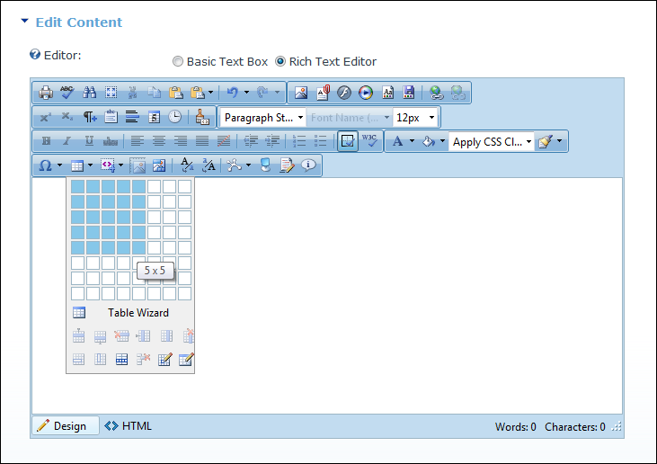
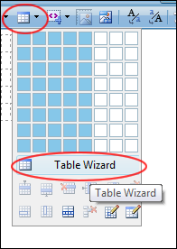
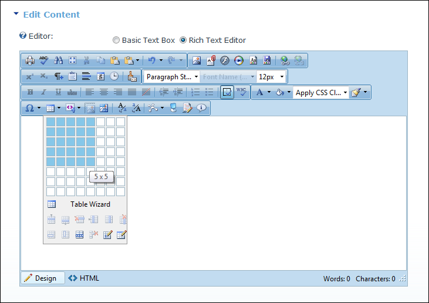
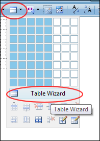

- To insert a basic table, move your cursor to highlight the number of rows or columns for the table and then click to select it. This displays the basic table in the Editor.

- To design a more complex table, click the Table Wizard button.

How to insert a table using the TelerikEditorProvider for the RTE.

